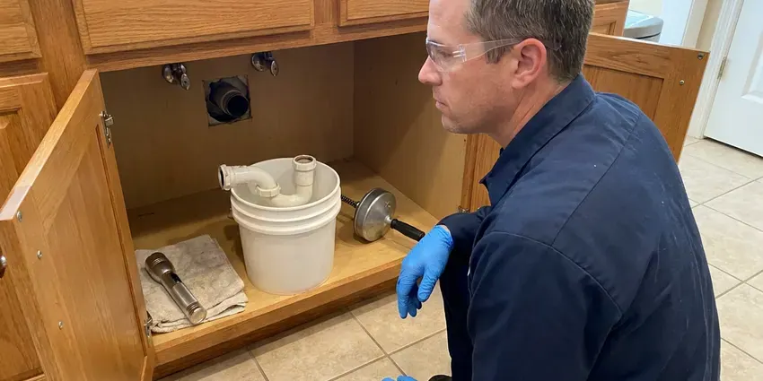

Septic Tank Repair in Longmont, CO
Not every backup means a new drain field. In Longmont, CO we check the tank, tees and filter first, and you pay for what actually broke.
- Fast Septic Service
- Local Septic Techs
- Effluent Pump Service
- Licensed Colorado Plumbers

Septic Tank Acting Up in Longmont, CO?
Call GFR Plumbing and we will track down what broke and repair it without guesswork.
Septic Repair for Longmont, CO Homes Off the Sewer
Septic repair here covers more than the tank. Our crew handles the whole run, from the cleanout at the house to the far end of the drain field, including D-boxes and outlet filters. The work is done by licensed plumbers, and we pull permits when the job needs one.
Our expertise includes:
- Distribution box repair and replacement
- Inlet and outlet tee replacement
- Locating and sealing tank cracks

Additional Plumbing Repair Services in Longmont, CO
We offer expert plumbing repair services across Longmont, CO to stop leaks, clear blockages, and keep every fixture working the way it should.


Customers
Why Choose GFR Plumbing for Septic Tank Repair in Longmont, CO?
A septic backup does not wait for business hours, and neither do we. Most emergency calls get a tech on site the same day, with a truck carrying the common pumps and floats. Small parts fix most of them.
- Camera and Locator, A sewer camera and a line locator find breaks without tearing up the yard.
- System Experience, Our crew has worked on gravity systems and aerobic units all over the Longmont area.
- Price Before Work, You get a written price before any digging, and it does not change unless we find something new and tell you first.
Citywide Coverage
From the edge of town to the county line, our crews reach septic systems on paved roads and dirt ones. Rural calls get the same response time we give in town. We do not add a travel surcharge inside our normal area. Mud season too.
Experienced Team
Septic work is half plumbing and half excavation, and every member of our crew is trained to handle both sides of it. One tech can read the camera footage and operate the digger. That keeps the job moving. There is no waiting on a separate excavation company.
Safety-First Approach
Every permitted repair gets documented, and you get the permit and the inspection report for your files, along with our camera photos. Buyers ask for those. A clean record helps when you sell the house.
Trusted Certified Longmont Plumbing Services Professionals
At GFR Plumbing, we are proud to offer certified plumbing services throughout Longmont, CO. Credentials matter in this trade. Our plumbers hold recognized industry credentials, and they follow strict safety and quality rules on every repair, installation and maintenance call we run.
Call Us Now PHCC Plumbing Contractor Recognition
PHCC Plumbing Contractor Recognition Better Business Bureau (BBB) Accreditation
Better Business Bureau (BBB) Accreditation Angi Certified Pro
Angi Certified Pro ISO 9001 Quality Management Certification
ISO 9001 Quality Management CertificationFrom Tank to Drain Field: Septic Repair in Longmont, CO
Aerobic and Alternative System Repair in Longmont, CO
Aerobic treatment units use an air pump to feed oxygen to the bacteria, and when that pump dies the unit starts to smell within days. Our techs rebuild linear aerators and swap rotary ones, and we clear diffusers that have plugged with sludge. Timers and panels get tested too. We also keep the service log your permit may require.

Inlet and Outlet Baffle Replacement in Longmont, CO
Baffles hold back the scum layer on top and the sludge on the bottom so only clear effluent leaves the tank. Concrete ones get eaten by sulfuric acid from sewer gas and eventually fall off into the tank. Once the outlet baffle is gone, solids head straight for the field. We replace them with PVC sanitary tees. Usually a short job.
Septic Lid and Riser Repair in Longmont
Old concrete lids crack, and a cracked lid over a 1,000-gallon tank is a real danger to kids and pets. We replace failing lids and add risers that bring access up to the lawn. Future pumping gets cheaper. Every lid we set is screwed down or locked so a child cannot lift it.
Repair Versus Replace in Longmont, CO
Most septic systems that fail can be repaired for a fraction of the cost of a new one. You see the repair and the replacement priced next to each other, and we tell you which one we would pick for our own house. A new field is sometimes the right call. Often it is not.
Septic Code and Permit Work in Longmont, CO
New tanks and new fields need a permit from the local health authority in most of the country, along with any change to the system's layout. Our office prepares the site sketch and submits the permit, then book the inspector before anything is covered. Small fixes like a tee usually skip the permit. The inspector's sign-off goes in your file.
Septic Tee Repair in Longmont
Sanitary tees on the inlet and outlet crack or pop loose, sometimes from a careless pump-out hose. Without the outlet tee, the floating scum layer drifts into the laterals and plugs the gravel. We glue in a new Schedule 40 tee. An effluent filter goes on if the outlet has room.
Septic Repair for Businesses in Longmont, CO
Daycares and small shops on septic put more flow through the tank, more often, than a typical three-bedroom house with four people in it. Grease from a kitchen and paper towels from restrooms are the usual troublemakers. Our fix often includes a bigger effluent filter and a pumping schedule tied to real use. Repairs get scheduled around your hours.

Septic Repair Costs Compared in Longmont, CO
Baffle or tee replacement often runs $300 to $900. An effluent pump replacement usually lands between $900 and $2,000 with the floats, and inlet line repairs run $800 to $3,000 depending on depth and length. Leach field restoration or replacement can cost $5,000 to $20,000 or more. The cheapest fix that actually works is the one we push for.
Nearby Septic Tank Repair for Longmont, CO
Search septic tank repair near me in Longmont, CO and you will find plenty of pump trucks. A pump-out is just one piece of it. GFR Plumbing repairs the tank and the field lines too, so one crew handles the problem from the first call to the final inspection.
Expansive clay soils are a well-known problem in parts of Colorado, swelling with moisture and lifting slabs, basement floors, and buried pipes. Our crew works with that ground on every repair. We pick bedding material and trench depth to match the soil we find in the hole, not what a textbook says. A test pit often comes first.
GFR Plumbing at a Glance
- Licensed and insured plumbers serving Longmont, CO
- 24/7 emergency service with same-day scheduling
- Clear written estimates, no hidden fees
- 4.8-star rated by 750+ Colorado customers
Longmont Map
Longmont Information
- Population
- 98,630
- Area codes
- 303/720/970
- Service area
- Longmont and communities within 40 miles
- Nearby
- Lafayette, Boulder, Broomfield, Loveland
Expansive clay soils are a well-known problem in parts of Colorado, swelling with moisture and heaving slabs, basement floors, and buried pipes. Ground conditions decide how long a drain field lasts, so we check the field along with the tank in Longmont, CO.
Talk to a Plumber
Call GFR Plumbing for honest, reliable plumbing from people who know the trade in Longmont, CO.
Our Specialized Plumbing Services in Longmont, CO
At GFR Plumbing, you get every kind of plumbing service from one company across Longmont, CO. From leak detection to full system installs, our team works fast and charges fair prices on homes and commercial properties alike. Explore our core services below:


Our Septic Tank Repair Process in Longmont, CO
Here is what a septic repair looks like from the first call to the final test flush.
Schedule a Visit
Reach GFR Plumbing at (720) 727-9398 and we will set a time that works for you. Emergencies go to the front of the line.
Camera and Diagnosis
At your Longmont home, we camera the lines and check the field with a probe rod. You see the footage.
Fix and Close Up
We explain the problem, give you a written price and do the repair to local code. Lids go back on secure.
Frequently Asked Questions About Septic Tank Repair in Longmont
Prices start around $300 for a single baffle and climb past $5,000 for field work or a brand new tank. Depth and access drive most of the difference. GFR Plumbing quotes in writing after the on-site diagnosis, and the number does not move once we start.
Usually not. Most places count a pump or float swap as routine maintenance, while a change in pump size or dosing design can require a health department sign-off. We check before we order parts.
Stop running water right away, including the washer and dishwasher, so the level in the tank does not keep rising. Keep the family and pets clear of the spill. Then call (720) 727-9398 for an emergency visit. We clear the blockage and walk you through cleanup.
It depends on where you live, since sale inspections are set by state law and by the local health department in each area. Septic systems and private wells are common in the mountains and rural plains of Colorado, outside the reach of municipal sewer. Even where it is optional, many buyers request one. Anything the inspector flags, we can repair and document for the buyer.
Our usual picks are Zoeller and Liberty effluent pumps, sized to the head and distance from the pump chamber to the field. Each one goes in with a new float tree and a union. The high water alarm gets wired on its own circuit. Goulds on request.
Pump the tank every three to five years, sooner if you run a garbage disposal. Spread laundry out over the week instead of doing six loads on Saturday, because a field can only take so much water at once. Keep grease and wipes out of the drains. Keep cars off the field.
Concrete, fiberglass, plastic and steel tanks all come through our schedule, and each one fails in its own particular way. Steel tanks rust out around the top. A plastic tank pumped during high groundwater can lift right out of the hole. We also service aerobic units and pressure-dosed systems.
Sometimes, and it is worth checking before you pay for a new one. Many fields that look dead from the surface come back after the laterals are jetted and the D-box is leveled. Giving the field a rest for a few months sometimes lets the biomat break down. Sealed soil cannot be fixed.
What Our Customers Say About Our Plumbing Experts

Angela D.
Our sump pump quit during a storm and the water was an inch from the basement carpet. GFR Plumbing put in a new pump with a battery backup that same evening. We have had two heavy rains since. It kicked on both times.
Sump Pump · Lafayette, CO
Emily R.
The shutoff valve under our kitchen sink snapped off in my hand on a Sunday morning. GFR Plumbing had someone out by early afternoon. He replaced both angle stops with quarter turn valves and showed me where our main shutoff was, which I honestly did not know.
Plumbing Repair · Broomfield, CO
Brian W.
I smelled gas behind the dryer and called right away. The plumber found a corroded flex connector, replaced it, and pressure tested the whole line before turning the gas back on. He let me watch the gauge hold steady for fifteen minutes.
Gas Line Repair · Westminster, CO
Tyler J.
We bought a taller comfort height toilet for my dad, who just had knee surgery. The plumber pulled the old one, found the flange was cracked, and replaced it before setting the new bowl. Took about two hours.
Toilet Installation · Westminster, COLisa C.
Water was pouring out from under the washing machine on a holiday weekend. GFR Plumbing talked me through closing the valves over the phone and had a plumber at the house within ninety minutes. It was a burst fill hose.
Emergency Plumbing · Broomfield, CO
Kevin O.
Before buying our house I paid for a sewer camera inspection. GFR Plumbing found a belly in the line that held standing water about forty feet from the cleanout. We used the video to get the sellers to fix it before closing.
Sewer Camera Inspection · Loveland, CO